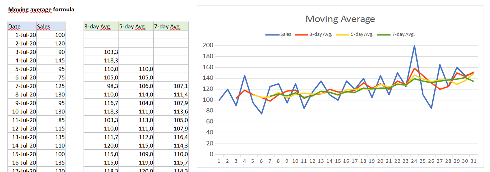
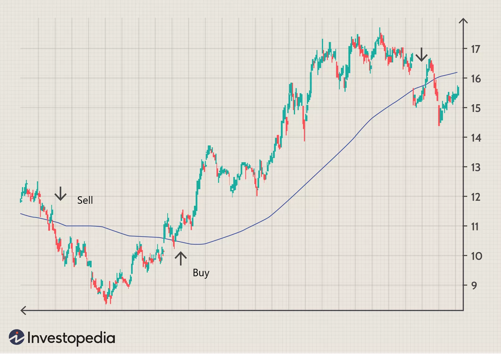
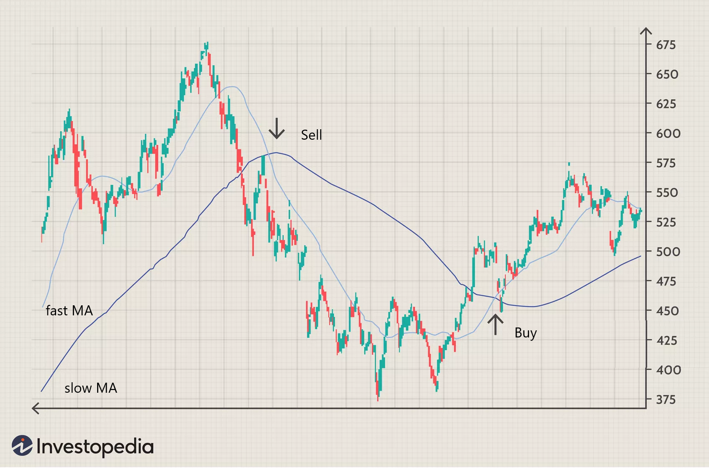
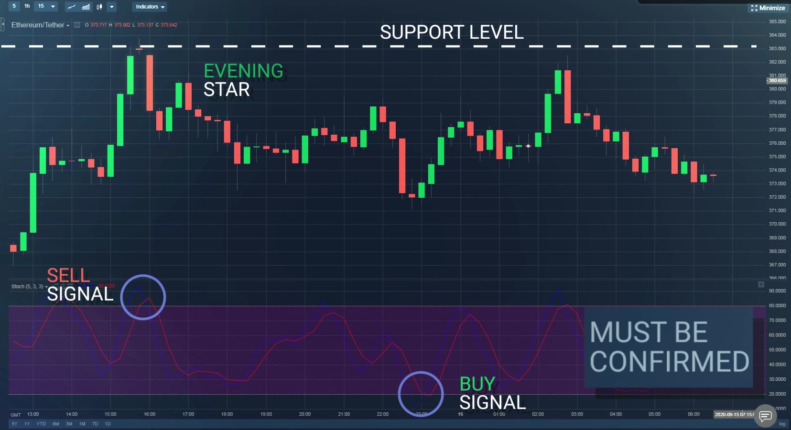

A moving average is a calculation to analyze data points by creating a series of averages of different subsets of the full data set.
It smooths out price data by creating a constantly updated average price. The average is taken over a specific period of time, like 20 minutes, 10 days, 30 weeks or any time period the trader chooses.
Moving averages with a shorter look back period (20 days, for example) will also respond quicker to price changes than an average with a longer look back period (200 days).
Types of moving averages
- Simple Moving Average (SMA): unweighted average of the previous k data-points.
- Exponential Moving Average (EMA): more weighting on the most recent price data.
Disadvantages
- It is calculated based on historical data, and not predictive.
- It works well in strong trending conditions but poorly in ranging conditions.
- It is best to utilize another indicator to help clarify the trend.

|  |
Practice Time chart: BTC/USDT Chart: Candlestick Chart interval: 30 min Input length: 21 (day) Sell: MA crosses above the price Buy: MA crosses below the price |
|  |
Practice Time chart: ETH/USDT Chart: Candlestick Chart interval: 1 day Input length: 6 (hours) - fast MA (short-term) Input length: 24 (hours) - slow MA (longer-term) Sell: fast MA crosses below the slow one Buy: fast MA crosses above the slow one |
|  |
Practice Time chart: ETH/USDT Chart: Candlestick Chart interval: 1 day Input length: 5 Input smooth K: 3 Input smooth D: 3 Sell: Overbought area: from 80 to 100 Buy: Oversold area: from 0 to 20 |